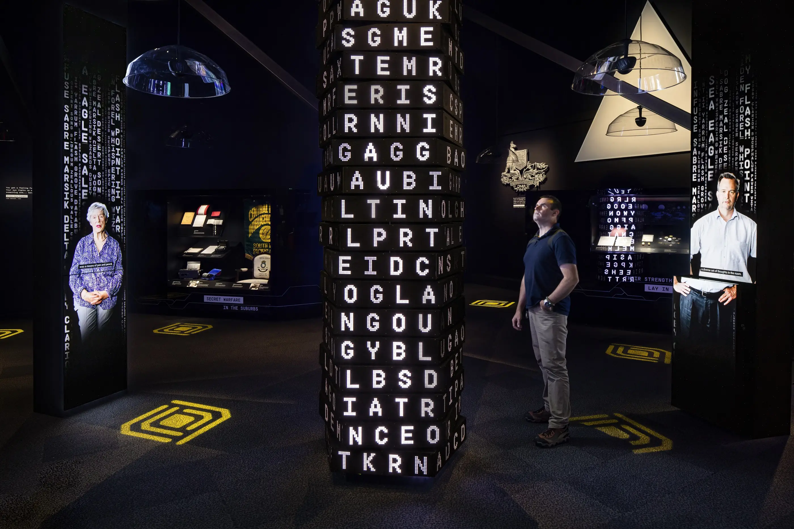
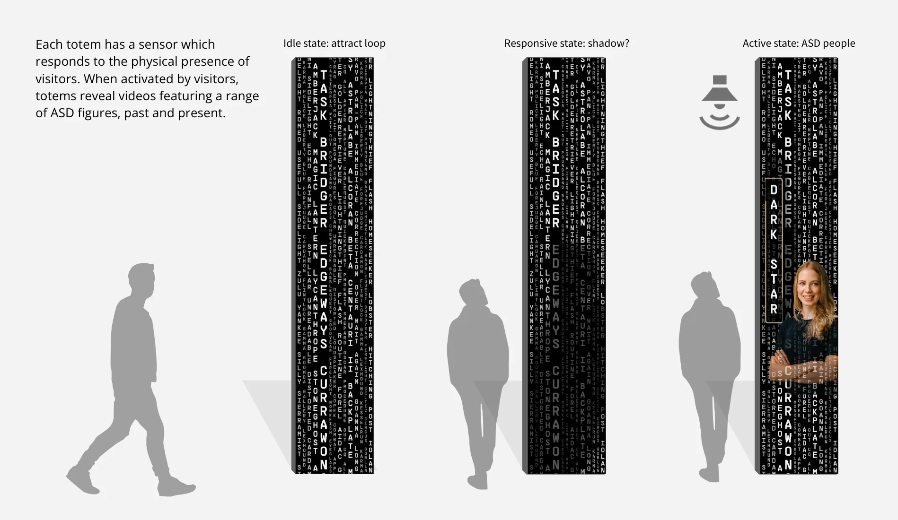
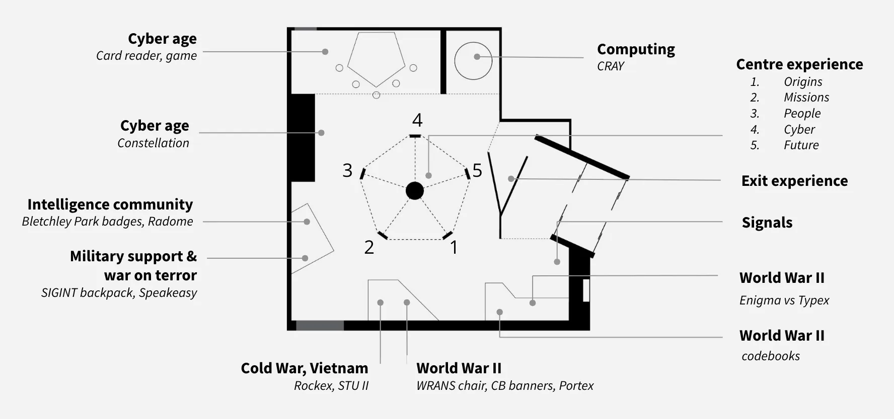
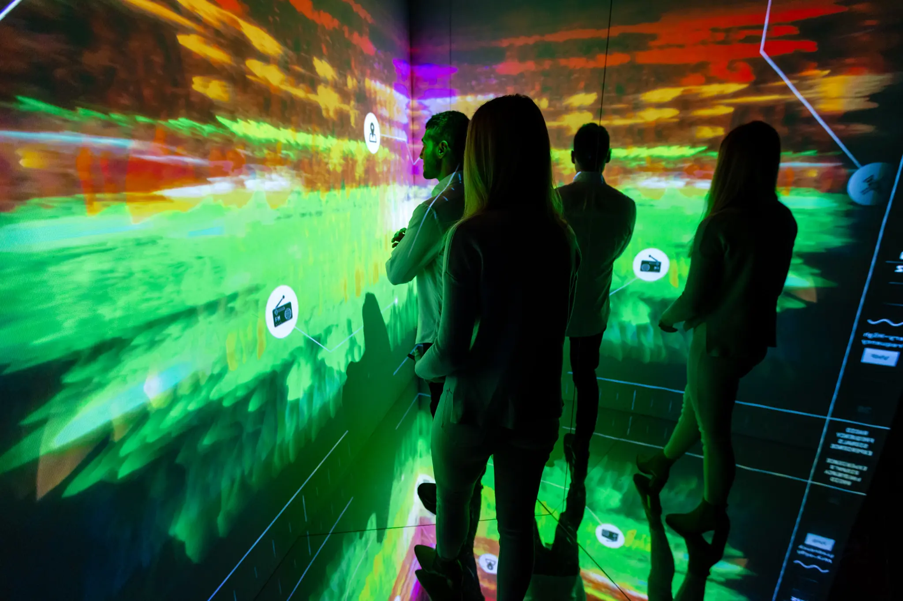
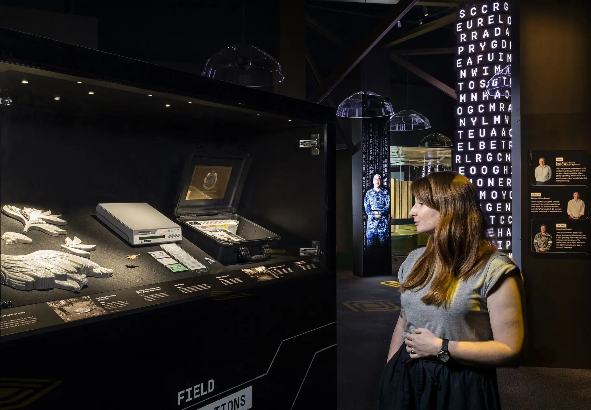

Decoded: Australian Signals Directorate
Canberra, Australia
How do you show something designed to stay hidden?
Decoded marked 75 years of the Australian Signals Directorate, opening up highly classified, technical work to a public audience without flattening it.


Initial concept for interactive media totems.
We developed the exhibition concept, narrative framework, and visitor flow. I shaped the experience strategy, UX, and story structure, defining how visitors moved from its origins in the Second World War through to contemporary cyber security.

Story map and key objects mapped across the space.

Surface telling the evolution of radio frequencies.
The exhibition is structured around a rhythm of conceal and reveal. Moments of orientation give way to more complex material, allowing visitors to build an understanding gradually rather than being overwhelmed by it. Interactive and media elements make invisible systems legible, from signals interception to contemporary cyber operations, without reducing them to simple explanation.

Visitors encounter fragments of real-world scenarios, piece together partial information, and begin to understand how meaning is constructed from signals, noise, and uncertainty. The aim wasn’t to simulate intelligence work, but to give a sense of how it feels to interpret incomplete and often ambiguous information.
The exhibition needed to hold a wide range of audiences, from general visitors and school groups to current and former ASD staff and their families, creating a space that felt informative, reflective, and credible without drifting into spectacle.
It offers a rare view into a world built on concealment, while still respecting the limits of what can be shown.